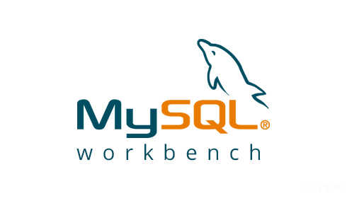

This project presents a deep learning approach for lung cancer prediction using histopathological images. We design and evaluate transfer learning with the EfficientNetB7 convolutional neural network architecture pre-trained on ImageNet. The histopathological images are preprocessed to enhance their quality and standardized format. We propose a model architecture integrating global average pooling for feature extraction and fully connected layers for classification.
Cardiovascular diseases (CVDs) are the most frequent reason for death nowadays. In this project, three reliable machine learning algorithms, random forest, The K-Nearest Neighbors (KNN) and Logistic Regression have been performed for CVD detection using a dataset from Kaggle, a public data repository.Based on the results, we obtained 70 % accuracy in detection using the Random Forest model. All the analysis has been performed in Python 3.

In this project, I will use my database design and development skills to reorganize spreadsheet data into a database for an online grocery business to help them expand their offerings. The objective was to catalyze their expansion by transitioning their product dataset from a spreadsheet to a well-organized relational database.

Customer churn happens when customers stop using the services of a company. This problem is very important for different companies because every company needs to be aware of the customers' churn rate. It is very crucial to know the number of customers who have stopped using the company’s services because the companies should find out the reason for customer churn to make proper decisions in this matter. In this project, we are going to predict customer behavior based on the Telcom dataset of a company in California and the logistic regression model In R will be performed.

The National Immunization Surveys (NIS) are a group of telephone surveys used to monitor vaccination coverage among teens. In this project, The report contains vaccination coverage estimates, the analysis of weighted data for the complex survey design, T-tests to compare differences in vaccination coverage by survey year (2021) and among sociodemographic groups. In this project, all the data analysis has been conducted in SAS 9.4 Version. Besides, we have used data for 18006 teens to determine the coverage estimates of the vaccine 1+ HUMAN PAPILLOMAVIRUS SHOT.